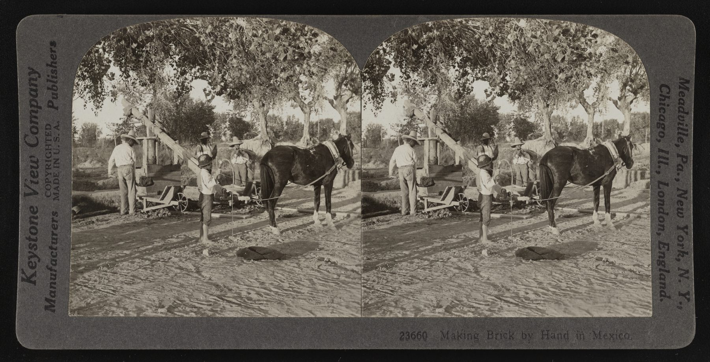
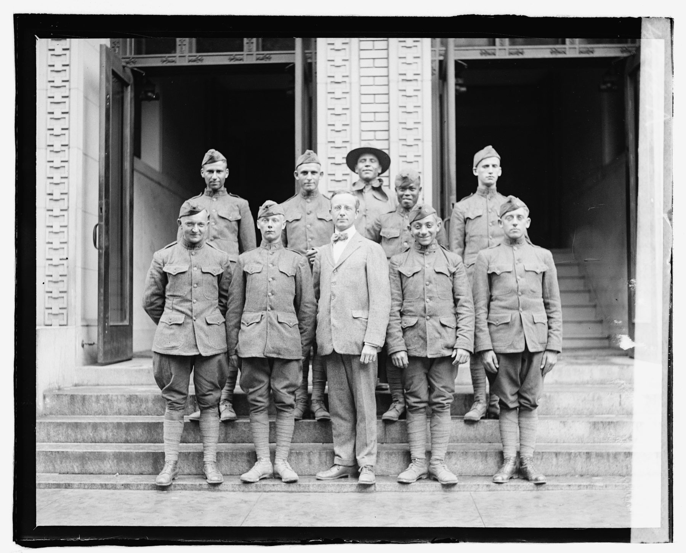

A naturalization petition is a form. Columns, fields, boxes to check.
Name. Birthplace. Port of entry. Occupation.
It was designed to sort people — not remember them.
But a form is also an accident of preservation. Behind every field
is a world the clerk never asked about — and the Library of Congress
holds that world. These are two of those forms, and the
worlds behind them.
The Name on the Petition
A woman files for citizenship in a Los Angeles courtroom. The form records her name, her children, and a date of birth that isn't quite right. The reasons it isn't right are the story.
NARA Petition No. 201669. Filed in the U.S. District Court, Los Angeles, California. Admitted to the United States: El Paso, Texas, May 10, 1927. National Archives and Records Administration.
The petition gives a place: Uriangato, a small city in the state of Guanajuato, in the Bajío — the highland plateau of central Mexico. Socorro Dominguez was born there in 1898. Her father owned an adobe brick business. The family was established. The form has no field for what came next.
It lists three children. The eldest: Gracia Nino, born June 1912. Admitted to the United States at El Paso, Texas, May 10, 1927. The dates are clean, official, unremarkable. But one of them is wrong.
That is what the petition says. Gracia Nino, born June 1912.
But a baptism record from the parish church in Uriangato tells a different story. On June 12, 1911, a priest recorded the baptism of Maria Juana Gracia Micaela Nino — daughter of Felipe Nino and Maria Socorro Dominguez. Four names from a church ledger. By the time she appears in American records, she is just Gracia. The names are gone. And the year has moved.
Her parents changed the date — moved her birthday forward by a year so she could cross the border on her mother's passport rather than needing her own visa. She was fifteen or sixteen at the crossing — old enough that the discrepancy mattered, young enough that a clerk in El Paso wouldn't question it.
"The form says 1912. The church says 1911. Both dates are real — they just belong to different systems."Why lie? Why risk it? The answer is not on the petition. It is in the history of the place they left.
Socorro married Felipe Nino — a laborer who bought bricks from her father's adobe business. Her father disapproved. She was disinherited. They stayed in Uriangato anyway, through the Mexican Revolution, through three children.
What finally drove them out was not the Revolution itself but what followed it. The Cristero War (1926–1929) — a Catholic uprising against the new government's anticlericalism — turned the Bajío into a war zone again. Catholic families in Guanajuato were caught in it. The Ninos were a Catholic family in Guanajuato.
"They had survived the Revolution. The Cristero War was the thing that made them leave."In 1927, Socorro and Felipe left Mexico with three children and crossed the border at El Paso, Texas. They needed every child on one passport. So they made Gracia a year younger. The falsified date followed her for the rest of her life — on every form, every record, every official document she ever signed.
Congress passed the Immigration Act of 1924 three years before they crossed. The law set national-origin quotas that effectively barred immigration from Asia and drastically restricted Southern and Eastern Europe. Mexico was exempted — but only because agribusiness and the railroad industry needed the labor.
The exemption was never warm. It came with a new apparatus of documentation — visas, border inspections, head taxes — designed to track and control the very workers the economy demanded. And while Mexicans could enter, the Act made it nearly impossible for them to naturalize. Socorro crossed legally in 1927 and would live in the United States for decades before the system allowed her to become a citizen. The petition you are reading is the end of that wait.
From El Paso, Felipe found work on a railroad section gang. The family lived on a railroad outfit car — a mobile housing unit that moved as the tracks were laid. Their home had no fixed address. It was the advancing edge of the American railroad, heading north through the Southwest toward Idaho.
When the railroad work finished, the family moved to Los Angeles — settling at 140 Pasadena Avenue in Azusa, a town in the San Gabriel Valley, by the 1930 census. The timing was terrible. The Mexican Repatriation had begun.
Between 1929 and 1936, the U.S. government organized mass deportations of Mexican and Mexican-American residents. Somewhere between 400,000 and one million people were forcibly removed or pressured to leave — many of them American citizens by birth. Entire neighborhoods in Los Angeles were emptied.
The Nino family did not leave. Felipe found work on Morris Dam — a City of Pasadena infrastructure project in San Gabriel Canyon, directly up the road from Azusa. He biked to work. It is possible that his employment on a major public works project gave the family a measure of protection that their neighbors did not have.
This is the document you have been reading.
Socorro crossed the border in 1927. She did not file this petition for roughly twenty-eight years. Not because she didn't want to. Because the law wouldn't let her. The Immigration Act of 1924 allowed Mexicans to enter the country but made it nearly impossible for them to naturalize. Courts spent decades arguing whether Mexicans were "free white persons" — the racial category required for citizenship. In 1935, a federal judge in Buffalo rejected a Mexican man's petition outright, ruling he was not white. It was not until the Immigration and Nationality Act of 1952 that racial barriers to naturalization were fully eliminated.
Socorro filed her petition in Los Angeles sometime after 1952. She had lived in the United States for a quarter century — survived the Repatriation, raised her children, watched her neighbors deported — before the country she lived in allowed her to belong to it.
"She crossed in 1927. She belonged in 1955. The petition is the proof of both the welcome and the wait."
Subject of His Majesty
A dark-skinned man walks into a courtroom in Brooklyn and tells a judge he is white. He has paperwork to prove it. The paperwork is from the British Empire — and the argument is more audacious than it sounds.
NARA U.S. passport application for Mohaiyuddin Khan, New York City, 1921. National Archives and Records Administration · Passport Applications, 1795–1925. Note: Mohaiyuddin's naturalization petition has not been located. This document contains enough.
British Guiana. A colony on the northeast coast of South America — today's Guyana — that Britain populated with indentured laborers after the abolition of slavery in 1834. The crown needed bodies for the sugar plantations. It found them in India and Afghanistan.
Between 1838 and 1917, roughly 240,000 Indians were transported to British Guiana under the indentureship scheme — a system so structurally similar to slavery that abolitionists called it exactly that. Workers were contracted for five years, forbidden from leaving the plantation, subject to criminal penalties for breach of contract.
Mohaiyuddin Khan's father arrived on one of those ships. The empire that bound his family to the colony also gave him a British passport. That passport is the hinge of this entire story.
Gool Mohammad Khan — a Yusufzai Pathan from the village of Moorni in the district of Dir, Afghanistan — arrived in British Guiana on May 11, 1877, aboard the ship King Arthur. He came as an indentured laborer. The colonial police recruited him at the immigration depot.
He served as a constable for two years. Then he resigned — and became something the colonial system had not anticipated. Within two decades he had built the Juma Masjid on Church Street, Georgetown — the colony's first and most prominent mosque — and served as its first imam. He started an international trading business. He published a book. He debated Christian missionaries in public forums that drew over a thousand people.
"The empire gave him a rank and a ceiling at the same time. He walked past both."Gool Mohammad Khan began his life in the Americas as an indentured laborer — the lowest rung the British system offered — and built himself into a community leader, a merchant, an imam, and an author. His son Mohaiyuddin grew up watching a man navigate an empire from the inside. He learned the lesson.
Mohaiyuddin Khan arrived at Ellis Island in 1913. Six years later, he walked into a courtroom in Brooklyn and made an argument that should not have worked.
American naturalization law required applicants to be "free white persons." Mohaiyuddin was not white by any common understanding. But he was a British subject — and British subjects, he argued, were treated as eligible for naturalization under the treaties between the two nations. Born in a Crown colony, not on the Indian subcontinent, the argument was just plausible enough.
"He claimed whiteness not as a description of his body but as a legal inheritance from the empire that had colonized his family."The judge granted it. Certificate number 9662 was stamped and filed. Mohaiyuddin Khan was an American citizen.
Four years later, in United States v. Bhagat Singh Thind (1923), the Supreme Court closed the door Mohaiyuddin had walked through. Thind — a high-caste Hindu who argued he was "Aryan" in the scientific sense — was told that the word white meant what the common man thought it meant. Whatever the scientists said, a man from India was not what Congress had in mind.
The ruling didn't just close the door. It reached backward. In the years following Thind, the government moved to revoke the citizenship of dozens of South Asians who had already naturalized. Certificates were canceled. Citizens became aliens again.
Mohaiyuddin's passport applications identified him as East Indian — a classification that alone was grounds for revocation. But his citizenship held. A 1939 emergency passport still carries the NATURALIZED stamp. A 1959 passport confirms he was still an American citizen, forty years after Brooklyn.
Perhaps his British Guiana birth — a Crown colony, not the subcontinent — placed him outside the denaturalization campaign's reach. Perhaps the bureaucracy missed him. The documents confirm the outcome but not the reason.
Mohaiyuddin Khan lived as an American for half a century. His passport records show a merchant's life — hides and skins, business in England, the Far East, the Malay States — conducted under the protection of a citizenship he had argued into existence.
His last known American address was the Chelsea Hotel, West 23rd Street, New York City. He died on October 13, 1968, in Eastbourne, Sussex, England, at seventy-nine. His death was reported to the American consulate as that of a U.S. citizen. His sister — in Karachi — was the imam's daughter who had stayed within the empire.
"His father started as an indentured laborer and built a mosque. His son started as a British subject and made himself an American. The empire was the instrument both times."
One family crossed the border three years after the Immigration Act of 1924 was signed — arriving legally, into a country that had just built a new wall of documentation around the labor it needed. The other family had already slipped through — naturalized five years before the Supreme Court ruled that people who looked like them could not be citizens.
They never met. They had no reason to. But the same law — the same Congressional debate, preserved in the same archive — shaped both their lives. One hundred years later, the naturalization papers they filed are still in the record. The worlds behind those papers are in the Library of Congress.
It is 2026. The Act turned 100 last year.
Who belongs. Who is white enough. Who is useful enough to stay. These questions were debated in Congress in 1924 and recorded in the Library of Congress. They are being debated in the same building now. The archive holds both centuries.
The naturalization papers are the starting point. The Library of Congress holds the world around them — the congressional debates, the newspaper coverage, the photographs of the communities these families built, the maps of the routes they traveled. Hidden in Plain Sight uses the archive to turn a list of dates and fields on a government form into the full, dimensional story of who these people were.
This is a proof of concept. The 1924 series continues with the papers of other families — passengers, laborers, refugees — whose histories a form almost accidentally preserved.
Contact Sitara Systems